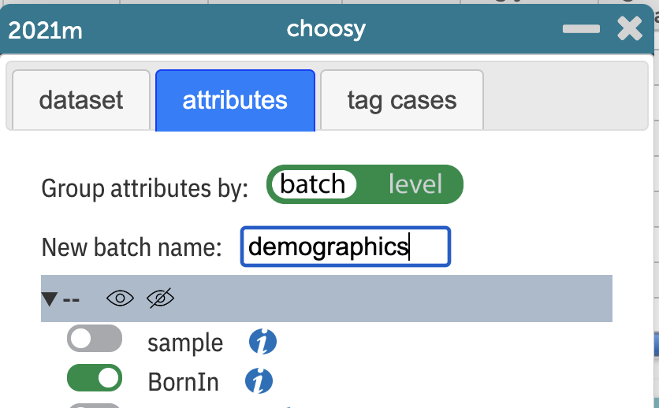
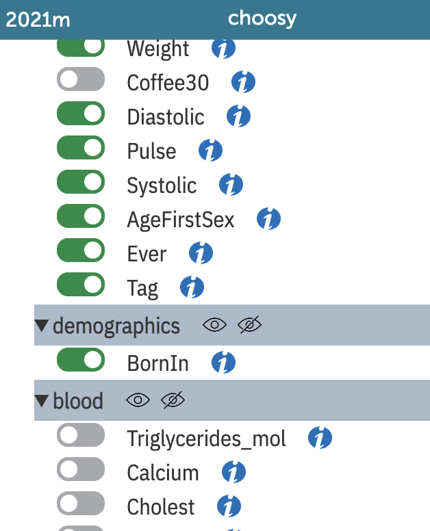

Batches of attributes
Choosy lets you create and name sets of attributes, called batches.

demographics
BornIn to the demographics batch. You can also see a blood batch, which has been suppressed by pressing the eye icon with the slash.- Enter the batch name in the box and press
enter. A new batch “stripe” appears at the bottom of the list of variables. - Drag an attribute you want to be in that batch and drop it on the stripe.
Tip
You may need to drop it on an empty part of the stripe (not the name of the batch). The stripe turns yellow when you’re in the right place.
- Click the eyeball icons to hide or show all attributes in that batch
- Click the triangle to collapse or expand the list of attributes in that batch
- If you move all of the attributes out of a batch, it disappears.